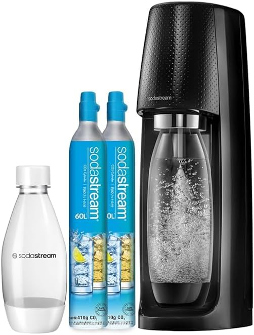

SodaStream TERRA｜「炭酸水を買いに行く」という習慣が、終わった話
重い箱をスーパーから運んで、捨てるためにまとめておいて、またスーパーに行く。その繰り返しに、ある日気づいた。

SodaStream TERRA スターターキット ガスシリンダー2本セット
Amazonで確認
炭酸水を「運ぶ」ことへの疲れ
ハイボールが好きで、毎日炭酸水を飲む。週に500mlペットボトルを10本以上消費していた。箱買いすれば安くなるが、12本入りの段ボールはそれなりに重い。玄関からキッチンまで運んで、飲み終わったボトルは押し入れに積んで、まとめてゴミに出す。その動線が、地味に面倒だった。
ソーダストリームが気になりながら、「元が取れるか」「手間がかかりそう」と先送りにしていた。TERRAに変えてから半年。今は「なぜもっと早く買わなかったのか」と思っている。
SodaStream TERRA（テラ）とは
世界45カ国以上で販売される炭酸水メーカーの最大手ブランド、SodaStream（ソーダストリーム）の主力モデル。グッドデザイン賞を受賞したスリムなボディと、シリーズ初採用の「クイックコネクト」技術が最大の特徴だ。電源不要の手動式で、水を入れたボトルをセットしてボタンを押すだけで炭酸水が完成する。
今回のセットはガスシリンダー2本入り。1本60Lで合計120L分のガスが最初から揃う。毎日500mlを飲む場合、約240日分のガスが手元にある状態からスタートできる。
主要スペック
| 電源 | 不要（完全手動式） |
| 本体サイズ | W135×D195×H425mm・約1.3kg |
| ガスシリンダー容量 | 60L/本（クイックコネクト式・ピンク） |
| 炭酸強度調節 | ボタン押し回数で調節（微炭酸2回〜強炭酸5回） |
| 付属ボトル | DWSボトル1L×1・マイボトル0.5L×1 |
| 食洗器対応 | 1Lボトル対応（70℃まで） |
| ランニングコスト | 500mlあたり約18〜20円 |
| 製品保証 | 2年（会員登録で最長4年） |
使ってわかった、3つの本音
1. ワンタッチ交換は、前モデルとの差が大きい
TERRAより前のソーダストリームは、ガスシリンダーをねじ込んで装着する方式だった。これが「面倒」「毎回力がいる」と言われていた弱点だ。TERRAはレバーを下ろすだけの「クイックコネクト」方式になり、シリンダー交換が2秒で完了する。
使い続けると確実に感じる差だ。ガスが切れたとき、面倒に思わない。そのまま交換して、ボトルをセットして、ボタンを押す。所要時間は30秒もかからない。習慣が途切れるほどの手間がない、というのが長続きの理由だと思う。
2. 「500ml約18円」という数字を、実生活で体感する
ガスシリンダー1本（交換価格・約2,380円）で約60Lの炭酸水が作れる。500mlあたりに換算すると約20円。市販の炭酸水500mlが80〜120円とすると、4〜6分の1のコストだ。
毎日1Lの炭酸水を飲む生活で計算すると、年間の節約額は2〜3万円規模になる。本体代との差し引きで元が取れるのは7ヶ月目以降という試算があるが、実感としてはもっと早く「もとが取れた感」が来る。毎回スーパーで箱を持つ手間がなくなっただけで、その時間と労力の価値が加算されるからだ。
3. 「冷水で作る」という小さなコツが、大きな差を生む
炭酸は水温が低いほどよく溶ける。常温の水と冷えた水では、同じ回数ボタンを押しても炭酸の強さが全然違う。TERRAを使い始めて最初に気づく「なんか弱い」という不満の9割は、水温の問題だ。
冷蔵庫にボトルを入れておいて、飲む直前に炭酸を入れる——このルーティンにするだけで、ウィルキンソンと同等以上の強炭酸が作れる。1Lボトルと0.5Lボトルを交互に使い、冷水を常にスタンバイさせておくのが個人的な運用だ。
正直に書く、気になる点
使用できるのは水のみ。ジュースやお酒に直接炭酸を入れることはできない。「炭酸割りを作りたい」場合は、炭酸水を別途作ってから注ぐ手順になる。ドリンクメイトのような他社製品はジュース対応しているので、そちらが向いている人もいる。
ガスシリンダーは家庭ゴミとして捨てられない。使用済みシリンダーはメーカーや取扱店での交換・回収が必要だ。ただしソーダストリームの回収サービスは充実しており、宅配便での返却や家電量販店での交換が選べる。手間としては慣れればそこまで気にならない。
炭酸は時間が経つと抜けていく。大きい1Lボトルで作って半日後に飲むと、弱めに感じることがある。500mlボトルで飲み切りサイズに作るのが炭酸を楽しむコツだ。
こんな人に向いている
- 毎日炭酸水を飲む習慣があり、買い物の手間を減らしたい人
- ハイボール・炭酸割りをよく作る人
- ペットボトルゴミを減らしたい人
- キッチンをすっきりさせたい人
- 強炭酸でなければ満足できない人
総評
炭酸水を「買う」から「作る」に変えた生活の変化は、思った以上に大きかった。スーパーに行く動機のひとつが消えた。冷蔵庫に炭酸水の箱を積む必要がなくなった。ゴミ出しのペットボトルが劇的に減った。
SodaStream TERRAは、その入り口として最も失敗しにくい選択肢だと思う。ワンタッチ操作、スリムなデザイン、食洗器対応ボトル——使い続けるための設計が細部まで考えられている。ガスシリンダー2本セットなら、予備がある安心感でしばらく補充を気にせず使える。炭酸水を毎日飲む人なら、試す価値は確実にある。
SodaStream TERRA スターターキット ガスシリンダー2本セット
Amazonで確認